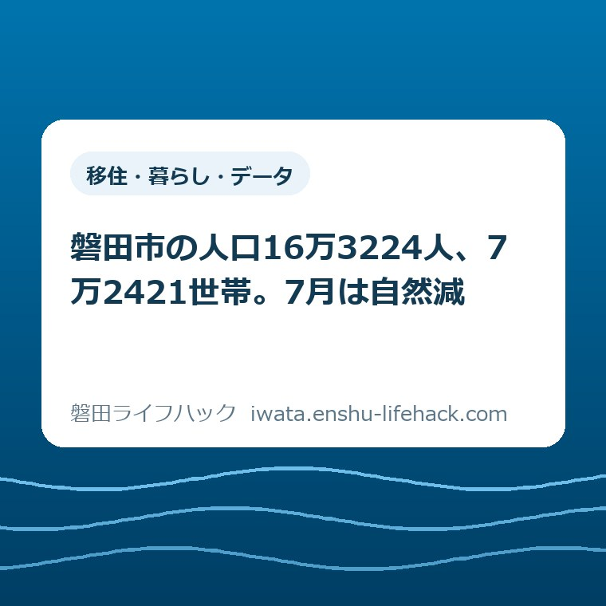

移住・暮らし・データ
磐田市の人口16万3224人、7万2421世帯。7月は自然減

この記事の要点
Q. 磐田市の人口と世帯数は今いくつで、なぜ減っているのですか？
A. 163,224人・72,421世帯です（令和8年7月末現在）。7月は前月末から97人減りましたが、転入480人・転出479人でほぼ均衡しており、減少分は出生76人に対し死亡174人という差から出ています。出ていくから減っているのではありません。
導入——「磐田も人が減ってるんでしょう」と言われたとき、私が最初に見る欄
磐田市の人口は163,224人、世帯数は72,421世帯です。令和8年7月末現在の値で、磐田市が「磐田市の人口 令和8年度」のページで公表しています（ページ更新日2026年8月17日、2026年8月30日確認）。6月末が163,321人でしたから、1か月で97人減った計算になります。
実家をどうするか考え始めたご家族から、「磐田も人が減ってるんでしょう」と言われることがあります。減っています。ただ、その一言で話を終わらせると、家の判断を間違えます。減り方の中身が、家が動く速さを決めるからです。
磐田市が7月分として公表しているのは、出生76人、死亡174人、転入480人、転出479人の4項目です。ここから引き算すると、生まれた方と亡くなった方の差はマイナス98人、引っ越してきた方と出ていった方の差はプラス1人になります。
97人の減少のうち、98人分が自然減です。転入と転出はほぼ同数で、差し引きは1人の増でした。人が出ていったから減ったのではない。私がこの月の数字でいちばん意外だったのは、そこです。
先に断っておきます。自然増減マイナス98人・社会増減プラス1人という欄は、磐田市のページには載っていません。市が載せているのは出生・死亡・転入・転出の4項目で、この2つの数字は私が引き算した値です。市の表には「転入・転出には帰化や国籍取得、国籍離脱などによるその他の増減を含みます」という注記もあります。純粋な引っ越しだけの数字ではない、ということです。
私は磐田市で不動産業をしている大石浩之（磐田市／不動産業）です。統計の専門家ではありません。ただ、数字を「1世帯あたり」「1日あたり」「家1軒あたり」に割り戻す癖はついています。この記事は、磐田市が出している人口の数字を、相続した実家をどうするか考え始めた方の側の段取りに置き換え直したものです。

まず、公式資料から事実を整理する——令和8年7月末の磐田市
磐田市「磐田市の人口 令和8年度」に載っている令和8年7月末現在の数字は、総人口163,224人、うち男性82,431人、女性80,793人、世帯数72,421世帯です。ページの見出しは「地区別人口（令和8年7月末現在）」「日本人外国人別人口（令和8年7月末現在）」「人口の移動（外国人を含む）」と分かれています。
日本人と外国人住民の内訳も同じページに出ています。日本人が153,106人・66,824世帯、外国人住民が10,118人・5,597世帯です。外国人住民は総人口の6.20%にあたります（10,118÷163,224、当方算出）。磐田市を語るときに外して考えられない規模です。
地区別では、磐田地区が89,771人・40,618世帯、豊田地区が29,327人・12,518世帯、竜洋地区が17,743人・8,115世帯、福田地区が16,129人・7,089世帯、豊岡地区が10,254人・4,081世帯です。磐田地区だけで市全体の55.0%を占めます（89,771÷163,224、当方算出）。
直近4か月の月末人口も同じページで追えます。4月末163,593人（前月比マイナス164人）、5月末163,503人（マイナス90人）、6月末163,321人（マイナス182人）、7月末163,224人（マイナス97人）。この4か月で533人減り、月平均は約133人減です。
年齢別の内訳は、同じページからリンクされているPDF「年齢別人口（令和8年7月31日現在）」にあります。5歳階級ごとの表で、65歳以上を合計すると49,092人になりました。総人口に対する割合は30.1%です。0歳から14歳が18,461人、15歳から64歳が95,671人で、三つを足すと163,224人になり総数と一致します。
ただし、この49,092人と30.1%は市の公表値ではありません。PDFに「65歳以上」の合計欄が無いため、5歳階級（9,717・10,828・12,331・7,532・5,088・2,631・807・158）を私が足した値です。市が高齢化率として公表している数字ではない点は、そのまま書いておきます。
減っているのは「出ていくから」ではない
令和8年7月の磐田市は、転入480人・転出479人で、出入りがほぼ同数でした。差し引きはプラス1人です。1か月のあいだに約480人が磐田市に入り、ほぼ同じ数が出ていって、結果として1人だけ増えた、という動き方をしています。
7月は31日ありますから、1日あたりに直すと、毎日およそ15人が磐田市に転入し、およそ15人が転出していた計算になります（480÷31、479÷31、当方算出）。人が動いていないのではありません。同じ規模で入れ替わっています。
これに対し、死亡174人は1日あたり5.6人、出生76人は1日あたり2.5人です（当方算出）。亡くなった方は生まれた方の2.3倍いました（174÷76、当方算出）。97人という減少の正体は、この差です。
「若い人が出ていくから磐田が減る」という説明は、少なくとも令和8年7月の数字には当てはまりません。ただし、これは1か月分の数字です。年間を通せば3月から4月にかけての進学・就職の移動が大きく出るはずで、7月だけで磐田市の傾向を語ることはできません。そこは私にも分かっていません。
それでも、この違いは商売の側から見ると大きい。転出で空く家と、亡くなって空く家では、次に動き出すまでの時間がまるで違うからです。
転出で空く家は、多くの場合、持ち主本人が生きていて、自分で決められます。売る・貸す・そのままにするの判断が、その場でできる。一方、亡くなって空く家は、名義が相続人に移るまで、誰も売る判断ができません。相続人が複数いれば、話がまとまるまでさらに時間がかかります。
つまり、自然減が主因の月が続くほど、市内には「決められる人がすぐには決められない家」が積み上がっていきます。私が7月の数字を見て気になったのは、人口の減り幅そのものより、この滞留のほうです。
数字を1世帯・1日に割り戻す
163,224人を72,421世帯で割ると、1世帯あたり2.25人です（当方算出、小数第3位切り捨て）。夫婦2人か、親と子1人か、あるいは1人暮らしと4人家族が混ざって平均でこの数、という規模感になります。
7月の減少97人を、この1世帯2.25人で割ると、約43世帯分にあたります。もちろん実際の世帯数の増減とは別の概算です。ただ、「97人減った」より「43世帯分が消えた」と言われたほうが、家を扱う側としては現実味があります。
仮に月97人の減少が12か月続けば、年間1,164人です。直近4か月の月平均マイナス133人で計算すると年間1,596人になります。どちらの見方でも、磐田市はおおむね年に1,000人台の規模で減っている、という桁になります。
この年1,000人台という数を、家の側に置き換えてみます。1世帯2.25人で割ると、年に450世帯から700世帯の規模です。市内の全世帯72,421のうち、毎年0.6%から1.0%にあたる数が、住む人のいない状態に近づいていく計算になります。全部が空き家になるわけではありませんが、桁としてはこの範囲です。
比較のために、市が公表している空き家の数を並べておきます。磐田市空家等対策計画は、戸建て住宅の空き家数を令和2年度時点で1,880戸としています。72,421世帯で割ると、約38世帯に1戸の割合です（当方算出）。この1,880戸という数字は令和2年度の調査時点のもので、令和8年7月末の世帯数と時点が違いますから、あくまで概算の比較です。
空き家の実際の入口については、磐田市の空き家バンクと空き家おこしプロジェクトの違いを整理した記事に書きました。バンクは事業者が登録する掲載の場、おこしプロジェクトは市の側から所有者に働きかける取り組みで、動き出す向きが逆です。人口の数字を見たあとで読むと、なぜ市の側から声をかける仕組みが要るのかが分かりやすいと思います。

地区別に見ると、世帯の大きさが違う
磐田市の5地区を1世帯あたりの人数で並べると、豊岡地区が2.51人で最も大きく、豊田地区2.34人、福田地区2.28人、磐田地区2.21人、竜洋地区2.19人と続きます（いずれも令和8年7月末の地区別人口と世帯数から当方算出）。最大と最小の差は0.32人です。
数字としては小さな差に見えます。ただ、1世帯あたり0.3人の違いは、その地区にどれだけ同居が残っているかの差だと私は受け取っています。親と子が同じ屋根の下にいる家が多いほど、この数は大きくなります。
ここからは私の見方であって、磐田市が示している解釈ではありません。同居が残っている地区ほど、家が空くタイミングは後ろにずれます。そして、ずれた分だけ、あるとき一気に来ます。今この地区に空き家が少ないことは、この先も少ないことを意味しません。
地区ごとの距離感については、磐田市は南北27キロあるという記事で、市役所と四つの支所からの距離として書きました。豊岡地区は市の北端側にあり、世帯あたり人数がいちばん大きい地区でもあります。人口の数字と地理の数字は、別々に見るより重ねたほうが実感に近くなります。
磐田市に住むことを検討している方向けの基礎的な情報は、磐田ってどんなまち？のページにまとめてあります。転入が月480人ある市ですから、出ていく話と入ってくる話は、同じ重さで見ておいたほうがいいと思っています。
18年前のピークからの距離
磐田市の人口のピークは2008年（平成20年）で、当時の記録では177,249人でした。令和8年7月末の163,224人と比べると14,025人、率にして7.9%の減少です（当方算出）。18年で割ると、年平均779人ずつ減ってきた計算になります。
ただし、この比較には注意が要ります。平成20年当時は日本人の住民基本台帳（167,313人）と外国人登録（9,936人）が別集計で、その合計が177,249人です。現在の163,224人は外国人住民を含む住民基本台帳の数字で、集計の枠組みが違います。当時の外国人登録は実態より多めに出やすい統計でもあったため、この7.9%という数字は幅を持って見る必要があります。
枠組みが揃っている数字としては国勢調査があります。磐田市の国勢調査人口は、平成27年が167,210人、令和2年が166,672人でした。5年で538人の減少です。月次の住民基本台帳の減り方に比べるとゆるやかで、同じ市の人口でも、どの統計を見るかで印象が変わります。
私が実務で使うのは月次のほうです。理由は単純で、家が動くのは月単位だからです。相続が起きてから売却の相談に来られるまでの間隔も、国勢調査の5年より、月の数字のほうが体感に近い。
評価——良い点と、注文したい点
良い点は3つあります。①毎月更新されていて、ページに更新日（2026年8月17日）が明記されていること。統計のページで更新日が分かるのは、古い数字を掴まされないという意味でありがたい。②地区別・日本人外国人別・年齢別と、切り口を分けて出していること。市全体の1行だけで終わらせていない。③出生・死亡・転入・転出を生データのまま載せていること。加工前の数字が出ているので、こちらで好きな割り戻しができます。
特に③は、この記事が成り立っている理由そのものです。もし市が「前月比マイナス97人」だけを出していたら、それが自然減なのか転出なのかは外からは分かりませんでした。4項目を分けて出しているからこそ、97人の中身に手が届きます。
その上で、一事業者として注文したい点も2つあります。①自然増減・社会増減の欄が無いことです。出生・死亡・転入・転出の4項目はあるのに、その差し引きは載っていません。この記事で使ったマイナス98人・プラス1人は、私が引き算して出した値です。市が同じ表の右端に2列足すだけで、市民が「出ていくから減っているのか、そうでないのか」を自分で読めるようになります。
②65歳以上の合計欄が無いことです。年齢別人口のPDFは5歳階級まで丁寧に分かれているのに、高齢化率を知りたい人は自分で8つの数字を足すことになります。私は足しました。足せない人のほうが多いはずです。
どちらも、市の職員の方が手を抜いているという話ではありません。統計の表は「元データを正しく出す」ことが第一で、加工した値を載せると解釈の責任が発生します。慎重になる理由は分かります。それでも、読む側の手間として、この2列は大きい。私の商売でも、査定書に「坪単価」を書くか書かないかで、お客さんの理解のされ方はまるで違います。
対案・結論——相続した実家をどうするか考え始めた方が、今日できること
今日、売るか売らないかを決める必要はありません。人口が減っているという話を聞いて、慌てて動く必要もありません。磐田市には7月も480人が転入しています。家を探している人は、現に市内へ入ってきています。
市全体の人口の増減と、あなたのご実家が売れるかどうかは、別の話です。売れるかどうかを分けるのは、市の人口より、その家の道路づけ・境界・名義・傷み具合のほうです。統計は背景であって、答えではありません。
その上で、今日できることは3つあります。どれもお金がかからず、決断も要りません。決めるための材料が1つ増えるだけです。
1つ目は、名義が誰になっているかを確かめることです。登記事項証明書は法務局で取れます。亡くなった親の名義のままなのか、すでに誰かに移っているのか。ここが分からないまま話を進めても、最後は必ず戻ってきます。相続の手続き全体の流れは、当サイトの磐田市の相続手続きのページに整理してあります。
2つ目は、固定資産税の納税通知書が今どこに届いているかを確認することです。届いている先が、市から見た「その家の窓口」です。通知が兄弟の誰かに届いていて、本人がそれを知らないという場面は珍しくありません。
3つ目は、家の前の道路の幅を測ることです。メジャー1本でできます。4メートルあるかどうかで、建て替えができるか、解体後に何が建てられるかが変わります。私は査定額を先に出す前に、道路と境界と名義を見ます。順番はいつも同じです。
空き家になった実家をどう扱うかについては、磐田市の空き家・実家じまい・相続した家を整理するページに、相談先と手続きをまとめてあります。
確認する順番
- 磐田市「磐田市の人口 令和8年度」を開き、最新月の総人口・世帯数と、その月の出生・死亡・転入・転出の4項目を見る。減っている原因が自然減か社会減かを、自分で引き算して確かめる。
- 同じページの地区別人口で、ご実家のある地区の人口と世帯数を確認する。1世帯あたりの人数を割り出しておくと、周辺にどれだけ同居が残っているかの目安になる。
- 法務局で登記事項証明書を取り、名義が誰になっているかを確かめる。相続人が複数いる場合は、その全員を書き出す。
- 固定資産税の納税通知書が誰のもとに届いているかを、家族に聞いて確認する。
- 家の前の道路の幅をメジャーで測り、写真を撮って日付とともに残す。
家族で共有するための記録
相続の話で時間を食うのは、調べる作業そのものではなく、調べた結果が家族の間で共有されていないことのほうです。誰かが法務局に行き、誰かが市役所に行き、その内容が集まらないまま半年が過ぎる。私が見てきた範囲では、これがいちばん多い詰まり方です。
共有する項目は、多くなくていいと思います。名義人の氏名、相続人の人数、固定資産税の通知の届き先、道路の幅、そして今回のような市の人口の数字を確認した日付。この5つを1枚の紙かスマートフォンのメモに書いて、家族の共有フォルダに置くだけで、次に集まったときの出発点が変わります。
日付を残すことをおすすめします。制度も数字も変わります。この記事で使った磐田市の人口163,224人は令和8年7月末現在の値で、私が確認したのは2026年8月30日です。半年後には別の数字になっています。「いつ調べたか」が書いていない記録は、あとから使えません。
手続きで市役所や支所へ行くことになったときは、扱える業務が本庁舎と各支所で同じではない点に気をつけてください。豊岡・豊田・竜洋・福田の四つの支所は、窓口で受けられる手続きの範囲が本庁舎より狭い場合があります。行く前に受付時間と取扱業務を調べておくと、往復が1回減ります。
大石の視点
ここからは公表情報ではなく、私の見方です。令和8年7月の磐田市で亡くなった方は174人でした。そのうち何軒が、これから空き家になるのか。私はその数字を持っていません。磐田市も公表していません。
持ち家に一人で住んでいた方もいれば、施設で暮らしていて家はとうに空いていた方もいます。同居のご家族がそのまま住み続ける家も多い。だから「174人が亡くなった＝174軒が空く」とは、私は書けませんし、書きたくありません。そこを雑に結びつけた瞬間に、この数字は不安を煽るための道具になります。
それでも、月に174人という数の重さは残ります。1日5.6人です。磐田市のどこかで毎日それだけの家族に、相続と家の話が始まっている。その一部が、半年後か3年後に、私のような不動産業者のところへ来ます。来ない家は、そのまま置かれます。
私が7月の数字で自分の商売の見立てを変えたのは、社会増減がプラス1人だった点です。正直に言えば、磐田は転出超過だと思い込んでいました。実際は入る人と出る人がほぼ同数で、減っているのは自然減のほうだった。ということは、磐田市の空き家の問題は「人を呼び戻す」話ではなく、「すでに市内にいる相続人が、いつ決められるか」の話に近いということです。
もう一つ、私が答えを持っていないことを書いておきます。1世帯あたり2.25人という数字は、これから下がり続けるはずです。世帯が小さくなるということは、家の数に対して人が薄く広がるということでもあります。それが空き家を増やす方向に働くのか、それとも1人暮らし向けの小さな家の需要を作るのか。私はまだ判断がついていません。市内の実際の取引を、もう少し見てから書きます。
まとめ
磐田市の人口は163,224人、世帯数は72,421世帯（令和8年7月末現在）。7月の97人減は、転出によるものではなく、出生76人・死亡174人という差から出ています。数字を割り戻すと、1世帯2.25人、97人減は約43世帯分にあたります。
この記事の数字は、すべて磐田市が公表しているものか、そこから私が計算したものです。どちらであるかは本文中に書き分けました。最新の値は、必ず磐田市の公式ページで確認してください。
- 磐田市の人口163,224人・72,421世帯（令和8年7月末現在。ページ更新日2026年8月17日、2026年8月30日確認）
- 7月は出生76人・死亡174人・転入480人・転出479人。前月末からマイナス97人
- 自然増減マイナス98人／社会増減プラス1人は、公表4項目からの当方の引き算（市の公表値ではない）
- 1世帯あたり2.25人。97人減は約43世帯分、年1,000人台の減少は年450〜700世帯分の規模
- 65歳以上49,092人・30.1%、外国人住民10,118人・6.2%（いずれも当方算出）
- 売る・売らないは今日決めなくていい。名義・固定資産税の通知先・道路幅の3つだけ先に確認する
よくある質問
磐田市の人口と世帯数は今いくつですか。どこで確認できますか。
磐田市の人口は163,224人（男82,431人、女80,793人）、世帯数は72,421世帯です。令和8年7月末現在の値で、磐田市の「磐田市の人口 令和8年度」のページに掲載されています（ページ更新日2026年8月17日、2026年8月30日確認）。同じページに地区別人口、日本人外国人別人口、人口の移動（出生・死亡・転入・転出）が月ごとに載っており、年齢別人口はPDFで公開されています。数字は毎月更新されるため、最新値は必ず市のページで確認してください。
磐田市の人口が減っているのは、若い人が出ていくからですか。
令和8年7月に限れば、当てはまりません。磐田市が公表した7月の数字は転入480人・転出479人で、出入りはほぼ同数でした。一方で出生76人に対し死亡174人です。前月末からの97人減は、そのほぼ全部が生まれた方と亡くなった方の差によるものです。ただしこれは1か月分の数字で、年間を通した傾向は別に見る必要があります。なお自然増減・社会増減の欄は市のページには無く、公表4項目からの当方の引き算です。
人口が減ると、相続した磐田市の実家は売れなくなりますか。
市全体の人口が減っていることと、個別の家が売れるかどうかは別の話です。令和8年7月の磐田市には転入が480人あり、家を探している方は現に市内に入ってきています。売れるかどうかを分けるのは、市の人口より、その家の道路づけ・境界・名義・傷み具合です。全体の統計を、特定の家への答えとして受け取らないでください。個別の判断は宅地建物取引士や司法書士など、資格を持つ専門家に確認してください。
参考にした公式情報
- 磐田市の人口 令和8年度／磐田市（2026年8月30日確認・ページ更新日2026年8月17日）
- 年齢別人口（令和8年7月31日現在）／磐田市（2026年8月30日確認）
- 国勢調査の結果／磐田市（2026年8月30日確認）
- 磐田市の人口（過年度）／磐田市（2026年8月30日確認）
- 空家等対策計画／磐田市（2026年8月30日確認）
最終確認日：2026-08-30 ／ 本記事は公表情報と執筆者の見解を分けて記載しています。制度・数値・公開状況は変更される場合があるため、最新情報は磐田市公式ページでご確認ください。